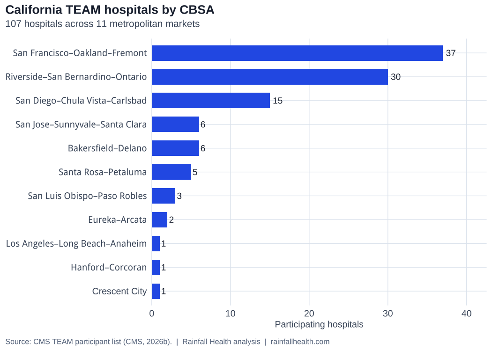
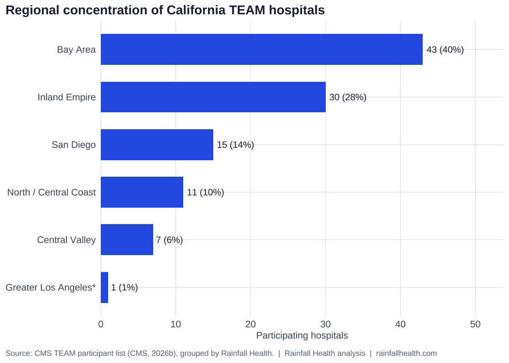
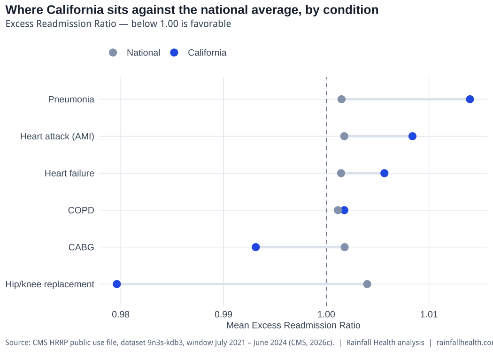

CMS TEAM in California: Reading the State’s Roster, Risk and Readiness
California holds the largest state roster in CMS’s Transforming Episode Accountability Model. An analysis of where the mandate sits, how participating hospitals perform on readmissions today, and what changes in Performance Year 2.

White paper
CMS TEAM in California: Reading the State’s Roster, Risk and Readiness
107 participating hospitals · 11 CBSAs · Performance Year 2 begins January 2027
Rainfall white paper · Narration
Listen while you read
In brief. California carries 107 of the 720 hospitals in the Transforming Episode Accountability Model — the largest state roster in the country, about 14.9% of the national list. Exposure is concentrated in a handful of metro markets, not spread evenly across the state. On readmissions, California’s position depends entirely on which condition you look at: surgical cohorts that map to TEAM look stronger than the national average, and every medical condition tracked runs the other way. That split starts counting for more in Performance Year 2, when a hospital-wide readmission measure enters the quality score.
01 · At a glance
California carries the largest state roster in the country’s newest mandatory hospital payment program. When the Centers for Medicare and Medicaid Services built the list of hospitals required to join the Transforming Episode Accountability Model, known as TEAM, it put 107 of them in California, spread across 11 metropolitan markets, out of 720 hospitals nationwide. That’s close to 14.9% of the entire national roster sitting inside one state. Of California’s 107, 106 were mandated in. Only 1 joined voluntarily. All of them are locked in for the model’s full run, January 1, 2026 – December 31, 2030.
It’s worth pausing on what TEAM actually asks of a hospital, because it’s a real departure from how Medicare used to pay for surgery. The old model paid piece by piece: a fee for the operation, a separate fee for the hospital stay, and then whatever came after — a stay in a skilled nursing facility, home health visits, or a return trip to the emergency room — billed and reimbursed on its own. TEAM collapses all of that into one 30-day window. A hospital is now accountable, financially, for everything that happens to a patient for thirty days after five kinds of procedures: hip and knee replacement, spinal fusion, coronary bypass, surgical repair of a hip fracture, and major bowel surgery. Spend too much across that window, or let the patient come back in, and it’s the hospital’s number that moves, not some other part of the system’s.
02 · Where the mandate sits
Start with geography, because California’s exposure is not spread evenly across the state — it’s concentrated in a handful of places. The San Francisco–Oakland–Fremont market alone accounts for 37 hospitals, about 35% of the state’s total, and that makes it the 2nd-largest TEAM market in the entire country, behind only New York. Riverside–San Bernardino–Ontario, the Inland Empire, comes in at 30 hospitals, 28% of the state, and ranks 4th nationally. San Diego–Chula Vista–Carlsbad adds another 15, about 14%. The remaining markets are smaller; the charts below show every CBSA and how Rainfall groups them into regions.
There’s also a system-ownership story worth knowing before you get to the performance data. About 64% of California’s roster — 68 of the 107 hospitals — sits in 14 multi-hospital systems with at least two TEAM sites in the state, and the single largest, Kaiser Permanente, accounts for 17 hospitals on its own, about 16% of the entire state roster. When one system holds a double-digit share of a state’s participants, decisions about episode standards, post-acute contracting, and data infrastructure tend to get made centrally, which changes who actually needs to be in the room when a hospital plans its TEAM readiness.
Figure 1 · Participating hospitals by CBSA
Figure 2 · Participating hospitals by region

Grouping those markets into regions sharpens the picture further. The Bay Area holds 43 hospitals, about 40% of the state. The Inland Empire holds 30, 28%. Greater Los Angeles, despite being the state’s largest metro area by population, contributes a single hospital to the entire list — the clearest illustration that CMS built TEAM around specific metropolitan statistical areas, not around where the most hospitals happen to be.
03 · Readmission performance where TEAM pays
Now to the part of the analysis that actually predicts how these hospitals are likely to fare under the model: readmissions. Medicare publishes an excess readmission ratio for nearly every hospital in the country, condition by condition. It compares how many patients actually came back within thirty days against how many you’d expect, given that hospital’s specific mix of patients. A ratio under one means fewer readmissions than expected. Over one means more. Because TEAM pays hospitals based on the thirty-day arc after surgery, a hospital’s existing readmission pattern is about the closest thing available to a preview of how it will perform under the new rules.
This analysis matched all 107 California hospitals to Medicare’s public readmissions file using their federal certification numbers, so the linkage is exact, hospital by hospital. 96 of the 107 have at least one reportable ratio in the current file; the other 11 fall below Medicare’s minimum case-volume threshold across every condition tracked. The data covers July 2021 – June 2024.
Figure 3 · Mean Excess Readmission Ratio by condition

Here’s where the story gets genuinely interesting, because California’s position depends entirely on which condition you’re looking at. On the two surgical categories that map most directly onto what TEAM actually pays for — hip and knee replacement and coronary bypass — California outperforms the nation. The average ratio for joint replacement across California’s TEAM hospitals is 0.980, against 1.004 nationally. Bypass surgery comes in at 0.993 against 1.002 nationally. Both numbers sit on the favorable side of the line.
But shift to the medical conditions — the ones that aren’t part of TEAM’s five surgical categories but draw on the same hospital floors, the same discharge planners, and the same post-acute partners — and the pattern flips. Heart attack patients in California come back at a ratio of 1.008 against 1.002 nationally. Heart failure runs 1.006 against 1.001. Pneumonia is the widest gap of all: 1.014 in California against 1.001 nationally. COPD is close to even, 1.002 against 1.001. On every one of these medical conditions, California hospitals are readmitting more patients than their case mix would predict, while the rest of the country is essentially running right at expectation.
Takeaway: California looks stronger on the surgical readmissions that map most directly to TEAM episodes, but hotter on medical readmissions statewide — so a hospital cannot assume its joint-replacement or bypass performance covers the rest of the house.
04 · What changes in Performance Year 2
That split between surgical and medical performance matters more starting next year than it did this year, because the scoring itself is about to change. TEAM’s first performance year leaned in part on a patient-safety composite measure that CMS is retiring after year one. From Performance Year 2 onward, the quality score instead draws on a broader hospital-wide, all-cause readmission measure, plus two new patient-harm measures covering falls with injury and postoperative respiratory failure, plus a measure tracking risk-standardized death among surgical patients who develop complications. The existing patient-reported outcome measure for hip and knee replacement continues, and a new measure tracking information transfer between care settings joins in year three, specific to joint replacement and spinal fusion episodes. The hospital-wide readmission measure is the one to watch, because unlike the outgoing safety composite, it does not distinguish between a surgical patient and a medical one. It counts everyone. That’s precisely the measure where California’s medical-condition weakness is going to show up, at the exact moment it starts counting more toward the score.
In plain terms: starting in Performance Year 2, CMS blends all of a hospital’s readmissions into one hospital-wide score — not just the surgical patients TEAM pays for directly. California’s TEAM hospitals look relatively strong on hip/knee and bypass readmissions, but above national expectation on the medical conditions in this file. A hospital that is fine on surgery can still see that broader measure pull its composite quality score down when it starts counting in reconciliation — without any change in how strong the surgical averages look on their own.
A few other pieces are already locked in. Spinal fusion has been one of TEAM’s five procedure categories from the start, but the definition is expanding: three new diagnosis-related-group codes for extensive and complex spinal fusion procedures take effect for discharges on or after October 1, 2026, and they fold directly into TEAM’s existing spinal fusion category. Any hospital that hasn’t updated its coding and documentation workflows for that change will feel it the first time reconciliation runs. Separately, the way Medicare calculates target prices is being recalibrated. Starting in Performance Year 2, the normalization factor that adjusts those prices will be calculated across a full three-year baseline instead of just the most recent year, alongside updated risk-adjustment coefficients, which should smooth out some of the volatility hospitals saw in year one.
There’s also a change worth knowing about even for hospitals convinced TEAM is their only concern. Washington finalized a second, entirely separate mandatory bundled-payment program for joint replacement specifically, covering nearly every acute-care hospital in the country that isn’t already in TEAM. It takes effect January 1, 2028, and it explicitly excludes hospitals already participating in TEAM. The practical effect is that California’s 107 TEAM hospitals will keep operating on a 30-day episode window all the way through 2030, while most of their peers elsewhere in the state and the country shift onto a 90-day window that also reaches into outpatient procedures and adds ankle replacement to the covered list. That’s two genuinely different playbooks running side by side — worth remembering the next time a joint-replacement strategy gets compared across a system that operates in both worlds, or gets evaluated as part of an acquisition.
05 · Considerations for hospital leadership
So what should an executive actually do with all of this? Start by confirming your own hospital’s status using its federal certification number rather than its name, because names drift between internal systems and Medicare’s files in ways that can create real confusion about who’s actually on the list and on what terms. Pull your own condition-level readmission ratios directly, because the statewide pattern — as strong as it is on surgery and as weak as it is on medical conditions — tells you almost nothing about where any one hospital stands. Start extending the discipline that’s clearly working in surgical discharge planning over to medical admissions, because that’s exactly where the scoring is about to lean harder. Revisit post-acute routing decisions using the actual evidence rather than habits inherited from older programs, now that the expanded three-day skilled-nursing waiver gives more room to do that deliberately. And calibrate expectations to what the evidence actually shows rather than to the model’s own ambition: real, durable savings are possible, but they come from sustained change in post-acute patterns over time, not from a single strong quarter.
06 · Methods, sources, and limitations
| Element | Basis | Computed or cited |
|---|---|---|
| Roster counts and CBSA breakdown | TEAM Participant List - 2026Q2 (as of April 15, 2026), parsed and vendored to the repository | Computed at render time |
| National TEAM hospital total | Same vendored participant list (720 hospitals nationwide) | Computed at render time |
| Readmission analysis | CMS HRRP public use file (dataset 9n3s-kdb3), window July 2021 – June 2024 | Computed at render time |
| Roster-to-HRRP linkage | CMS Certification Number, exact match | 96 of 107 hospitals carry reportable data |
| Multi-hospital system concentration | CCN map in data/ca_team_system_affiliations.csv (name-to-system, Sept 2026 review) | Computed at render time |
| Policy and rule changes | Federal Register final rules and 42 CFR 512.547 | Cited |
| Bundled payment evidence | Peer-reviewed evaluations of CJR and BPCI | Cited |
| Episode-cost exposure | Not published at hospital level | Not presented |
One thing this analysis deliberately does not do is put a dollar figure on any of this. Medicare doesn’t publish what an individual hospital’s target price is, or what its baseline episode spending looks like, and without that, any specific dollar exposure number circulating for California is somebody’s estimate dressed up as a fact. What the evidence does support, from Medicare’s own evaluations of earlier bundled-payment efforts, is a rough sense of where the money actually moves. In the first year of the mandatory joint-replacement program that preceded TEAM, hospitals under the mandate cut the share of patients discharged to institutional post-acute care by 2.9 percentage points, but total Medicare spending per episode didn’t change by a statistically meaningful amount. A separate, longer-running voluntary bundled-payment program did show real savings over time, roughly $1,166 less per episode compared to hospitals outside the program, driven again mostly from reduced use of institutional post-acute care rather than from cutting anything in the hospital stay itself, and without a measurable increase in readmissions, emergency visits, or deaths. The lesson for California is that savings are achievable, but they show up gradually, through sustained changes in where patients go after discharge, not in the first reconciliation cycle.
Every number quoted in Sections 01 through 05 is computed at render time from the vendored CMS participant list and HRRP public use file (July 2021 – June 2024). The national TEAM total (720 hospitals) is the row count of that same participant file, not a separate CMS headline figure. Counts are parsed from TEAM Participant List - 2026Q2 (as of April 15, 2026) (source: https://www.cms.gov/team-model-participant-list, retrieved 2026-09-21) and yield a California total of 107: San Francisco–Oakland–Fremont 37, Riverside–San Bernardino–Ontario 30, Bay Area plus Inland Empire 73 (68%). These reconcile to the editorial anchors held for this report. CMS republishes the list quarterly, so counts should always be read with their list vintage. This copy was built on October 6, 2026. Full citations, glossary, and downloadable tables are in the appendices below.
07 · About Rainfall Health
Rainfall Health is an AI-powered accountability and accessibility platform built for Medicare-mandated models, including TEAM and CJR-X. The platform is organized around three functions: automating compliance against what CMS actually requires, supporting case management and care coordination across the post-acute window where much of an episode’s cost sits, and enabling care design at the episode level. Rainfall Health is a health care technology company, not a hospital, health system, or provider organization.
This paper is part of an ongoing series analyzing how the TEAM mandate is distributed across states and markets, using published CMS data.
To discuss what this means for a specific hospital or system, contact Jessica Ohlssen, Senior Vice President of Revenue, at johlssen@rainfallhealth.com. Jessica leads go-to-market strategy and hospital partnerships at Rainfall Health and brings more than sixteen years in value-based care, including roles as Head of Provider Market at Unite Us and leadership of business development and partnerships at Manifest MedEx. She holds a B.Sc. in Psychology and Chemistry from DePaul University and an M.S. in Urban Policy and Public Health from The New School.
Further reading on the model is available at rainfallhealth.com/cms-team.
Appendix A · Glossary
| Term | Definition |
|---|---|
| CBSA | Core-Based Statistical Area. The federal metropolitan-area unit CMS used to select hospitals for mandatory TEAM participation. |
| CCN | CMS Certification Number. The unique federal identifier for a hospital; stable across name changes and the key used to link datasets in this analysis. |
| CJR-X | Comprehensive Care for Joint Replacement Expanded Model. A nationwide mandatory 90-day joint replacement model beginning January 1, 2028, which excludes hospitals participating in TEAM. |
| Composite Quality Score | The quality score CMS applies to a TEAM participant’s reconciliation, built from a defined set of quality measures that changes between performance years. |
| ERR | Excess Readmission Ratio. A hospital’s predicted 30-day readmissions divided by its expected readmissions, given its case mix. Above 1.00 is more than expected; below 1.00 is fewer. |
| HCC | Hierarchical Condition Category. The risk-adjustment framework CMS uses to account for patient complexity; TEAM adopted version 28 beginning in 2026. |
| HRRP | Hospital Readmissions Reduction Program. The Medicare program that publishes the condition-level readmission data used in Section 03. |
| IPPS | Inpatient Prospective Payment System. The Medicare payment system for acute care hospital inpatient stays, and the annual rule vehicle through which TEAM is updated. |
| MS-DRG | Medicare Severity Diagnosis-Related Group. The classification that determines inpatient payment and, in TEAM, which procedures trigger an episode. |
| SNF three-day rule | The Medicare requirement of a qualifying three-day inpatient stay before covered skilled nursing facility care. TEAM waives it under defined conditions, widening post-acute routing options. |
| TEAM | Transforming Episode Accountability Model. A five-year mandatory Medicare model running January 1, 2026 through December 31, 2030, holding hospitals accountable for cost and quality across a 30-day window following five surgical episode categories. |
Appendix B · Data companion
CSV files (regenerated each render) back every figure and include the full participant directory:
| File | Contents |
|---|---|
| ca-team-err-by-condition.csv | Condition-level mean ERR and share above 1.00, California and national |
| ca-team-hospitals-by-cbsa.csv | CBSA-level hospital counts and share of the state roster |
| ca-team-hospitals-by-region.csv | Regional hospital counts and share of the state roster |
| ca-team-participant-directory.csv | Full participant directory: hospital, CCN, CBSA, participation basis, dates |
| ca-team-system-affiliations.csv | CCN-to-system map used for Section 02 concentration counts |
References
TEAM Participant List - 2026Q2 (as of April 15, 2026)Disclaimer. Rainfall Health is not a hospital, health system, or health care provider. This paper is prepared by health care industry professionals, not clinicians, and does not constitute clinical, legal, financial, or regulatory advice. Roster counts and readmission figures are computed from the CMS files cited above; this paper does not assess, rate, or make claims about the quality of care provided by any individual hospital or organization.